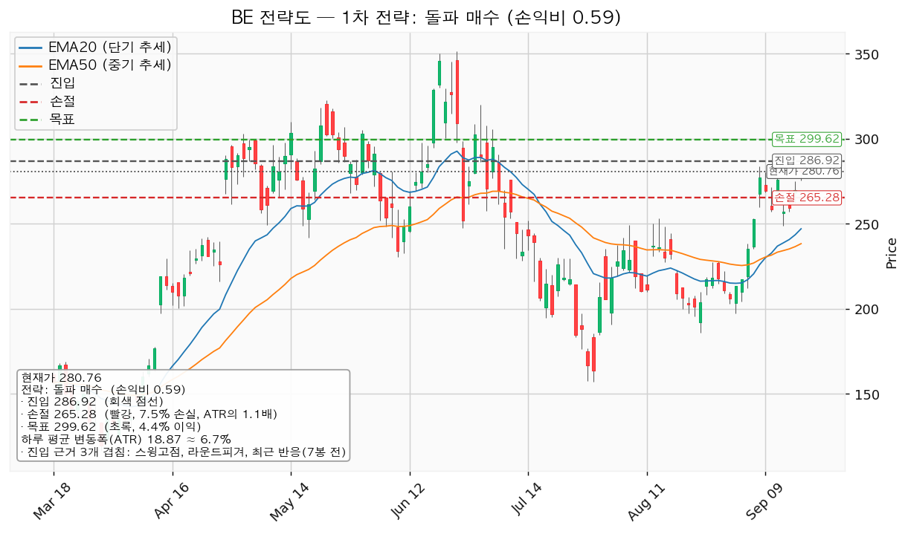
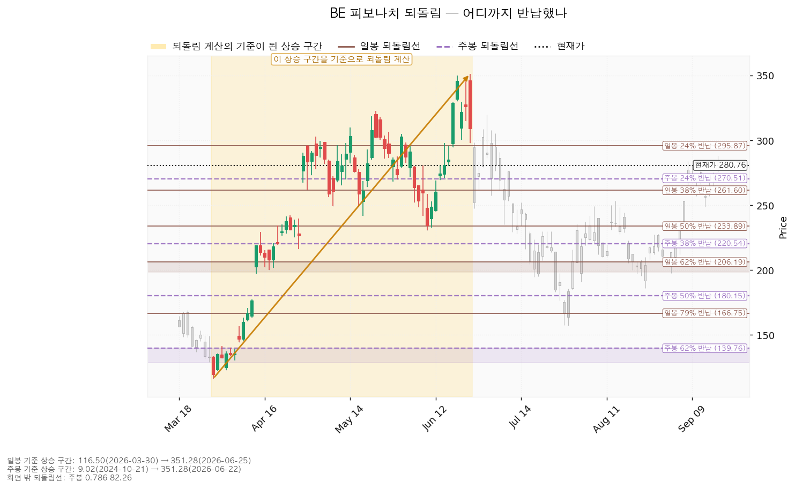
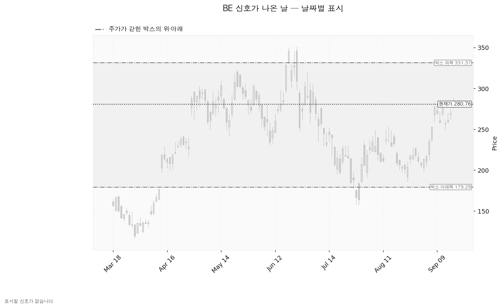
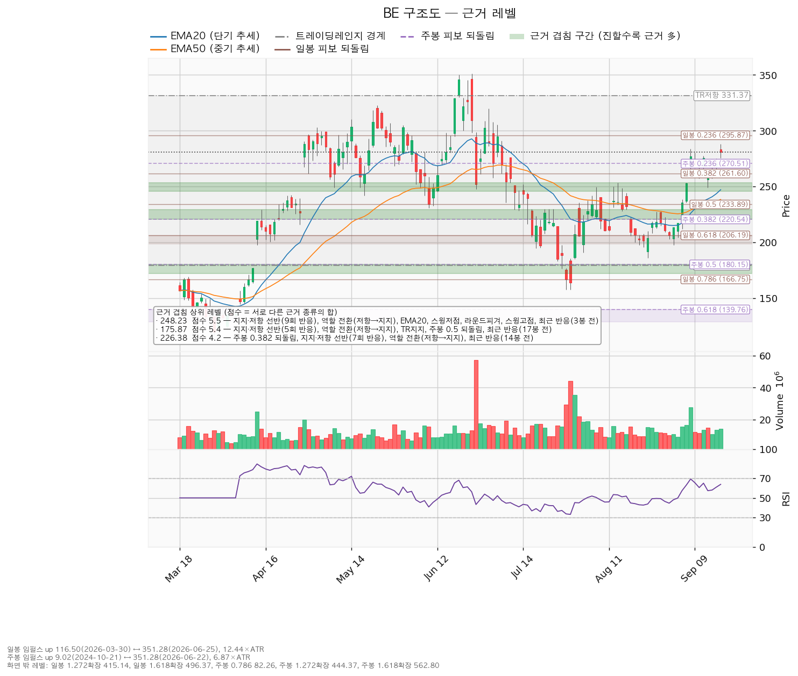

블룸에너지(BE)는 천연가스·수소로 전기를 만드는 고체산화물 연료전지 발전 장비를 제조하는 미국 기업으로, 데이터센터·공장·상업시설에 현장 설치형 전원을 공급합니다.
기준 종가는 2026-09-17의 280.76달러입니다(직전 리포트 기준가 259.35달러 대비 +8.26%).
| 구분 | 가격 | 판정 방식 | 현재 상태 | 현재가 대비 |
|---|---|---|---|---|
| 회복선 (상승 전환 판정) | 286.92달러 | 일봉 종가로 회복한 뒤 되돌림에서 지지되는지 | 회복 대기 | +2.19% |
| 집행 손절 | 241.95달러 | 종가·장중 구분 없이 닿으면 전량 청산 — 1주를 보유 중이므로 지금 유효하게 작동합니다 | 작동 중 | -13.82% |
| 관망 종료 기준 | 270.25달러 또는 2026-10-28 실적 | 일봉 종가가 아래로 마감하면 보유 계획을 재점검합니다 | 유지 중 | -3.74% |
| 확인선 (상승 확정) | 299.62달러 | 일봉 종가 돌파 후 되돌림 지지 | 미돌파 | +6.72% |
| 폐기선 (구조) | 179.29달러 | 이탈 후 3거래일 내 종가 회복 실패(또는 그 전에 160.42 아래 종가 마감) + 반등에서 저항 확인 — 하루 변동폭의 5.38배 거리로 실무상 작동하지 않습니다 | 유지 중 | -36.14% |
회복선 286.92달러는 구조가 위로 풀렸는지 판정하는 선이며, 그 가격에서 새로 사라는 뜻이 아닙니다. 같은 가격에 걸린 돌파 매수는 손익비 0.59로 이번에 패스했습니다. 286.92달러를 일봉 종가로 넘어서면 목표·손절을 그 시점 구조로 다시 산출합니다.
미진입자가 실제로 볼 선은 관망 종료 기준 270.25달러와 10월 28일 실적입니다. 폐기선 179.29달러는 그 용도로 쓸 수 없는 거리에 있습니다.
직전 리포트가 등록한 가격을 2026-09-16·09-17 두 일봉에 대고 판정한 결과입니다.
| 직전이 건 조건 | 판정 | 근거 |
|---|---|---|
| 회복선 270.25달러 일봉 종가 회복 | 충족 | 09-16 종가 270.02(0.23달러 미달) → 09-17 종가 280.76으로 회복 |
| 추가 매수 245.94달러 (눌림 대기) | 미충족·종료 | 이후 최저가 261.81(09-16)로 닿지 않았고, 현재가가 그 위 +14.16%로 떠났습니다 |
| 집행 손절 225.81달러 | 미충족 | 이후 최저가 261.81 |
| 목표·확인선 327.10달러 | 미충족 | 이후 최고가 288.00(09-17) |
| 관망 종료 240.78달러 종가 이탈 | 미충족 | 두 날 종가 모두 위 |
| 무효화 2단계 경고선 226.76달러 종가 이탈 | 미충족 | 도달 없음 |
| 폐기선 179.29달러 | 미충족 | 도달 없음 |
보유 1주(2026-09-15 매수, 평단 258.87달러)는 목표·손절 어느 쪽에도 닿지 않았고 평가손익은 +8.46%(+21.89달러)입니다. 직전 리포트의 방향 판단은 이틀 동안 맞았습니다.
직전 계획의 추가 매수분은 체결되지 않은 채 끝났습니다. 245.94달러는 현재가에서 하루 평균 변동폭의 1.82배 아래로 멀어졌고, 그 자리를 기다리는 계획은 이번 리포트에서 유지하지 않습니다.
| 항목 | 직전(09-16) | 이번(09-18) | 왜 움직였나 |
|---|---|---|---|
| 회복선 | 270.25달러 | 286.92달러 | 270.25를 종가로 넘어서면서 현재가 위 첫 겹침 구간이 283.83~290.00(2.3점 — 스윙고점 283.83, 라운드피겨 290, 7봉 전 반응)으로 바뀌었습니다 |
| 확인선 | 327.10달러 | 299.62달러 | 겹침 점수가 뒤집혔습니다. 295.87~302.99 구간이 2.8점(일봉 24% 되돌림·라운드피겨 300·스윙고점 302.99)이고 322.83~331.37은 2.4점(스윙고점·박스 상단)입니다 |
| 대표 셋업 | 눌림 매수 245.94달러 | 돌파 매수 286.92달러 | 245.94달러가 현재가 아래 1.82배 거리로 멀어져 수 주 시계의 셋업에서 빠졌습니다 |
| 대표 셋업 목표 | 327.10달러 | 299.62달러 | 확인선과 같은 이유입니다. 보유분이 보던 상방이 +26.12%에서 +6.72%로 줄었습니다 |
| 집행 손절 | 225.81달러 | 241.95달러 | 현재가가 올라오면서 아래쪽 겹침 구간이 230.61~240.00에서 245.60~253.31로 바뀌었고, 손절은 그 구간 아래로 다시 잡혔습니다 |
| 대표 셋업 손익비 | 1:4.03 | 1:0.59 | 진입이 245.94 → 286.92로 40.98달러 올라간 반면 목표는 327.10 → 299.62로 내려와 이익 폭이 81.16 → 12.70달러로 줄었습니다 |
| 현재가 추격 | 해당 없음 | 추격 비권장 | 현재가 280.76이 저항 286.92에 하루 변동폭의 0.33배 거리까지 붙었습니다 |
| RSI(14) | 58.00 | 63.82 | — |
| 하루 평균 변동폭 | 19.18달러 | 18.87달러 | 거의 그대로입니다 |
목표가 낮아진 대목은 그대로 적어 둡니다. 직전 리포트가 보유분에 걸었던 목표 327.10달러는 이번 산출에서 유지되지 않았고, 엔진이 고른 목표는 299.62달러입니다. 가격이 오르면서 더 가까운 저항 구간의 근거가 더 두꺼워졌기 때문입니다.
직전은 "보유 1주 유지 + 245.94달러 추가 매수 대기"였고 이번은 "보유 1주 유지 + 신규·추가 매수 패스"입니다. 방향 판단은 바뀌지 않았습니다 — 박스 안 매집 우위, 국면 후보 상승 진행, 폐기선 179.29달러가 그대로입니다.
바뀐 것은 신규 매수 여부입니다. 이틀 동안 +8.26%가 올라오면서 진입가와 저항 사이가 좁아졌고, 지금 사는 거래의 손익비가 1 아래로 내려왔습니다. 보유분을 파는 근거는 아니고, 같은 가격에 새 돈을 더 넣지 않는 근거입니다.
직전 리포트에서 정정할 오류는 없습니다. 밸류에이션·추정치·현금흐름 서술은 이번 조회값과 방향이 같습니다.
| 항목 | 값 | 의미 |
|---|---|---|
| 현재가(2026-09-17 종가) | 280.76달러 | 그날 저가 275.54 / 고가 288.00, 6월 25일 고점 351.28달러 대비 -20.07% |
| EMA20 (단기 흐름선) | 247.11달러 | 현재가가 +13.62% 위 — 하루 변동폭의 1.78배 |
| EMA50 (중기 흐름선) | 238.35달러 | 현재가가 +17.79% 위 — 정배열 유지 |
| RSI(14) — 과열·침체 정도를 재는 지표, 50이 중립 | 63.82 | 중립 위, 과열 기준선 70까지 여유 |
| ATR (하루 평균 변동폭) | 18.87달러 | 주가의 6.72% |
| 횡보 박스 | 179.29 ~ 331.37달러 (유효) | 폭이 하루 변동폭의 8.06배, 현재가는 박스의 위쪽 66.7% 지점 |
| 국면 | 횡보 레인지 — 하단 사수 조건부 | 추세 방향은 상승, 국면 후보는 상승 진행 |
| 보유 | 1주 · 평단 258.87달러 | 평가손익 +8.46%(+21.89달러), 최초 진입 2026-09-15 |
박스 판정 근거: 조회된 일봉은 753봉이며 40·90·180봉 세 구간을 시험했습니다. 가격이 경계 안에 머문 비율은 40봉 0.825, 90봉 0.967, 180봉 0.950으로 90봉이 채택됐습니다. 세 구간 모두 유효 판정이지만 가장 잘 지켜진 창이 90봉입니다. 넉 달 반 정도의 횡보를 본 것입니다.
박스 안쪽에서 무슨 일이 있었나 — 매집 우위(사 모으는 쪽이 우세): 지지 테스트는 5회였습니다(2026-07-17 저가 194.60, 거래량 평균의 1.08배 → 07-29 157.33, 2.77배 → 08-03 191.00, 1.05배 → 08-24 185.93, 0.91배 → 09-01 197.50, 0.90배). 테스트 때 매도 거래량은 감소했고, 박스 안 저점은 157.33 → 185.93 → 197.50으로 절상됐습니다. 이 둘이 매집 우위 판정의 근거입니다. 상승봉 대 하락봉 거래량비는 0.93으로 매수 쪽 거래량 우위는 아직 관측되지 않습니다(직전 0.93에서 제자리).
직전 구간과의 관계: 이 박스 직전 90봉의 구간은 126.39~237.81달러였고, 가격은 그 위로 뚫고 올라와 지금 박스로 들어왔습니다. 아래에서 올라온 자리라 다시 사 모으는 구간일 수도, 위에서 물량을 넘기는 구간일 수도 있습니다. 위 문단의 박스 안쪽 관측치가 사 모으는 쪽을 가리킵니다.
| 시나리오 | 조건 | 구조 해석 | 행동 |
|---|---|---|---|
| 상승 전환 | 286.92 종가 회복·지지 → 299.62 종가 돌파 | 속임수 하락 확인 → 강세 신호 → 되돌림 지지 → 상승 국면 | 보유분을 그대로 끌고 갑니다. 299.62 돌파 시 이 포지션을 연장하지 않고 새 셋업으로 다시 산출합니다 |
| 횡보 지속 | 179.29를 지키며 299.62 아래 박스 유지 | 구조는 유지되는 국면입니다. 매물 소화에 시간이 필요할 뿐 부정적 신호가 아닙니다 | 신규 매수 없이 보유분만 유지하며 추적 항목을 봅니다 — ① 지지 테스트 매도 거래량 감소(현재: 감소) ② 저점 절상(현재: 절상) ③ 상승 시 거래량·캔들 폭 확대(현재: 거래량비 0.93으로 아직 아님) |
| 시나리오 폐기 | 179.29 이탈 후 3거래일 내 회복 실패, 또는 그 전에 160.42 아래 종가 마감 + 반등에서 저항 확인 | 박스 안에서 있었던 일이 매수가 아니라 물량 넘기기였다는 뜻이며, 추가 저점 갱신 가능성을 엽니다 | 포지션 정리 후 새 매도 절정과 새 박스가 만들어질 때까지 관망 |
세 갈래 중 지금 가장 두꺼운 것은 횡보 지속입니다. 박스 안쪽 관측치 셋 중 둘(테스트 거래량 감소, 저점 절상)은 채워졌지만 상승봉 거래량 우위가 아직 없어, 299.62달러를 종가로 넘기 전까지는 박스 안 움직임으로 봅니다. 집행 손절 241.95달러는 이 시나리오 판정과 무관하게 따로 작동합니다.
엔진이 산출한 셋업은 2개입니다. 직전에는 3개였고, 현재가가 9회 반응한 선반 245.60달러에서 +14.16% 위로 올라가면서 지지 확인 매수와 눌림 매수(245.94)가 빠졌습니다.
| 항목 | 돌파 매수 — 대표 셋업 | 눌림 매수 |
|---|---|---|
| 엣지의 종류 | 모멘텀 (돌파 확인형) | 평균회귀 (선취형) |
| 전제 | 저항을 돌파하면 그 방향이 이어진다 | 지지로 눌릴 때 산다 — 되돌림이 멈추는 자리를 노린다 |
| 구조 증명도 | 돌파 확인형 (가중치 1.0) — 저항을 종가로 넘긴 뒤 들어가므로 진입가는 불리하지만 구조가 먼저 증명됩니다 | 선취형(구조 미확인) (가중치 0.7) — 구조가 증명되기 전에 먼저 잡으므로 진입가는 유리하지만 실패 확률이 높습니다 |
| 이 유형의 성격 | 자주 틀리고 소수가 크게 맞는 유형 *(이 유형의 일반적 성격이며 이 엔진에서 측정한 값이 아닙니다 — 백테스트 자료가 없습니다)* | 승률이 높고 이익 폭이 작은 유형. 저항에서 전량 청산이 정합적입니다 |
| 진입 | 286.92달러 (+2.19%, 하루 변동폭의 0.33배 위) | 270.25달러 (-3.74%, 0.56배 아래) |
| 진입 근거 겹침 | 2.3점 / 3개 — 스윙고점 283.83, 라운드피겨 290, 최근 반응(7봉 전). 구간 283.83~290.00 | 2.1점 / 2개 — 라운드피겨 270, 주봉 0.236 되돌림. 구간 270.00~270.51 |
| 집행 손절 | 265.28달러 — 근거 겹침 구간(270.00~270.51, 2.1점) 바로 아래. 손절 폭 -7.54%, 하루 변동폭의 1.15배 | 241.95달러 — 아래쪽 겹침 구간(245.60~253.31, 5.5점) 바깥. 손절 폭 -10.47%, 1.50배 |
| 목표 | 299.62달러 (진입 대비 +4.43%) — 겹침 2.8점 / 3개(일봉 0.236 되돌림, 라운드피겨 300, 스윙고점 302.99). 구간 295.87~302.99 | 299.62달러 (+10.87%) — 같은 구간 |
| 손익비 | 1 : 0.59 (손절 폭 1.15 ATR 기준) — 손실 폭 21.64달러, 이익 폭 12.70달러 | 1 : 1.04 (손절 폭 1.50 ATR 기준) — 손실 28.30달러, 이익 29.37달러 |
| 비중 | 1회 손실 한도 계좌의 1% ÷ 손절 폭 7.54% = 계좌의 13.3%. 한 종목 상한 13%를 넘으므로 13%로 제한합니다 | 계좌의 9.5% |
| 분할 청산(엔진 산출) | T1 299.62에서 100% — 분할 없이 단일 목표(중간 레벨이 없어 본전 스탑 구간도 없습니다). 전 구간 0.59 | T1 286.92에서 50%(손익비 0.59) → 잔여 손절 270.25(본전) → T2 299.62(1.04). 전 구간 0.81, T1 후 하한 0.29 |
| 판정 | 패스 — 손익비 0.59로 1을 밑돌아 보류합니다 | 대표 아님. 손익비 1.04로 1을 조금 넘고, 진입 270.25는 현재가 아래라 지금 집행할 수 없습니다 |
계획은 하나입니다. 보유 1주를 손절 241.95달러, 목표 299.62달러 전량 청산으로 끌고 가고 새로 사지 않습니다. 트레일링은 걸지 않습니다. 299.62달러 위 구간은 이 포지션의 연장이 아니라 새 셋업으로 다시 잡습니다.
대표 셋업 선정 이유: 엔진은 손익비 0.59 × 구조 증명도(돌파 확인형, 1.0) × 근거 겹침 2.3점으로 돌파 매수를 골랐습니다. 손익비만 보면 눌림 매수(1.04)가 높지만 구조 증명도가 0.7로 낮아 대표가 되지 못했습니다. 손익비 1등이 대표가 아닌 경우이며, 그 트레이드오프는 "진입가가 유리한 대신 구조가 아직 증명되지 않았다"는 것입니다. 이번에는 대표 셋업 쪽이 손익비 1을 밑돌아 둘 다 집행하지 않습니다.
손익비가 0.59로 내려온 이유: 진입 286.92달러에서 목표 299.62달러까지는 하루 평균 변동폭의 0.67배뿐인데, 손절까지는 1.15배입니다. 손절을 넓게 잡아서 나온 값이 아니라 목표까지의 거리가 손절 폭보다 짧아서 나온 값입니다. 두 손절 모두 근거 겹침 구간 바깥에 둔 구조적 손절이라 엔진이 별도의 구조적 손절 기준 손익비를 따로 내지 않았습니다 — 인용한 값이 이미 구조 기준입니다.
돌파 매수의 집행 규칙(참고): 진입 근거는 모멘텀이지만 집행은 레인지 규칙을 따릅니다 — 손절은 구조 아래, 목표 299.62달러에서 전량 청산이며 트레일링은 걸지 않습니다. 이번에는 이 셋업 자체를 집행하지 않으므로 맥락으로만 적습니다.
현재가 추격 여부: 현재가 추격은 권하지 않습니다. 현재가 280.76달러가 저항 286.92달러에 하루 변동폭의 0.33배까지 붙어 있어, 지금 사면 저항 바로 아래에서 사는 거래가 됩니다.

추격 대신 기다릴 자리는 아래와 같습니다.
| 항목 | 값 |
|---|---|
| 진입 후보 레벨 | 270.25달러 (겹침 2.1점 — 라운드피겨 270, 주봉 0.236 되돌림. 구간 270.00~270.51) |
| EMA20 투영치 (5봉 후) | 247.11 → 260.36달러 |
| EMA50 투영치 (5봉 후) | 238.35 → 246.04달러 |
확인선 299.62달러와 대표 셋업의 목표 299.62달러는 같은 가격이며, 이 가격에서 두 갈래로 나뉩니다 — 막히고 되밀리면 보유분을 계획대로 전량 청산하고(그게 목표였습니다), 일봉 종가로 넘어서면 상승 확정이며 그때는 새 셋업으로 다시 잡습니다. 박스 상단 331.37달러는 그 위의 맥락으로만 적습니다.
보유분에 적용되는 무효화는 눌림 매수 구조(기준선 270.25달러)의 3단계입니다. 대표 셋업인 돌파 매수는 집행하지 않으므로 그 무효화 사다리는 작동하지 않습니다.
| 단계 | 트리거 | 의미 | 행동 |
|---|---|---|---|
| ① 관찰 | 일봉 종가가 270.25 아래로 마감 | 구조 이탈 시작 — 되돌아 올라오면 속임수 하락일 수 있어 아직 무효가 아닙니다 | 신규 진입만 중단합니다(이미 중단 상태). 집행 손절은 그대로 둡니다 |
| ② 경고 | 이탈 후 3거래일 안에 270.25를 종가로 회복하지 못함, 또는 그 전에 일봉 종가가 251.38 아래로 마감(하루 평균 변동폭의 1배만큼 더 밀림) — 둘 중 먼저 오는 쪽 | 되돌림 지지 상실 가능성이 우세해집니다 | 보유 비중 축소. 반등이 나오면 이 가격에서의 반응을 확인합니다 |
| ③ 무효 | 반등이 270.25에서 막히고 그 아래로 되밀림(지지가 저항으로 전환) | 셋업 폐기 — 구조 해석이 틀린 것으로 확정 | 포지션 정리 후 새 구조가 만들어질 때까지 관망 |
집행 손절 241.95달러는 이 판정과 무관하게 별도로 작동합니다. 장중에 잠깐 270.25달러를 내준 것은 어느 단계에도 해당하지 않습니다.
하루 평균 변동폭이 주가의 6.72%로 8% 기준 아래이므로, 손절이 종목의 일상적 등락에 비해 지나치게 좁은 경우에 해당하지 않습니다. 보유분의 손절 폭은 평단 기준 0.90배, 평단에서 목표까지는 2.16배입니다.
집행 정책상 트레일링과 다단 청산은 걸지 않습니다. 목표 299.62달러에서 전량 청산하고, 그 위는 새 셋업으로 다시 잡습니다.
일봉·주봉 되돌림 모두 계산됐습니다.
| 기준 | 상승 구간 | 주요 되돌림선 | 현재가 위치 |
|---|---|---|---|
| 일봉 | 116.50(2026-03-30) → 351.28(2026-06-25), 하루 변동폭의 12.44배 | 24% 295.87 / 38% 261.60 / 50% 233.89 / 62% 206.19 / 79% 166.75 | 24%(295.87)와 38%(261.60) 사이 |
| 주봉 | 9.02(2024-10-21) → 351.28(2026-06-22), 6.87배 | 24% 270.51 / 38% 220.54 / 50% 180.15 / 62% 139.76 / 79% 82.26 | 24%(270.51) 위로 회복 |
직전 리포트 시점(259.35달러)에는 일봉 38%선(261.60) 아래였고 주봉 24%선(270.51)도 아래에 두고 있었습니다. 이번에는 둘 다 위로 올라왔습니다. 상승분의 24~38%를 반납했던 자리에서 24% 쪽으로 붙은 상태입니다.
일봉 24% 되돌림선 295.87달러는 목표 구간(295.87~302.99)의 하단 구성원이고, 주봉 24% 되돌림선 270.51달러는 관망 종료 기준 270.25달러와 같은 구간에 있습니다.

이 구간에서 엔진이 표시할 신호일은 없습니다. 속임수 하락·강세 신호·약세 신호 어느 것도 조건을 채우지 못했습니다. 직전 리포트와 같습니다. 신호가 없다는 것이 구조가 깨졌다는 뜻은 아니며, 국면 후보는 상승 진행이고 박스 안쪽 판정은 매집 우위입니다. 이 판정의 근거는 신호일이 아니라 지지 테스트 거래량과 저점 흐름입니다.
아래 차트가 회색으로만 보이는 것은 그 때문입니다.

| 가격대 | 겹침 점수 | 근거 | 현재가 대비 |
|---|---|---|---|
| 245.60 ~ 253.31 | 5.5 | 선반(9회 반응), 역할 전환(저항→지지), EMA20, 스윙저점, 라운드피겨 250, 스윙고점, 최근 반응(3봉 전) — 집행 손절이 이 구간 아래 | -12.52% ~ -9.77% |
| 172.03 ~ 180.15 | 5.4 | 선반(5회 반응), 역할 전환(저항→지지), 박스 하단, 주봉 50% 되돌림, 최근 반응(17봉 전) — 폐기선 구간 | -38.73% ~ -35.83% |
| 220.54 ~ 229.30 | 4.2 | 주봉 38% 되돌림, 선반(7회 반응), 역할 전환(저항→지지), 최근 반응(14봉 전) | -21.45% ~ -18.33% |
| 230.61 ~ 238.35 | 3.7 | 스윙저점, 일봉 50% 되돌림, EMA50, 최근 반응(14봉 전) | -17.86% ~ -15.11% |
| 295.87 ~ 302.99 | 2.8 | 일봉 24% 되돌림, 라운드피겨 300, 스윙고점 — 목표·확인선 | +5.38% ~ +7.92% |
| 322.83 ~ 331.37 | 2.4 | 스윙고점, 박스 상단 저항 | +14.99% ~ +18.03% |
| 283.83 ~ 290.00 | 2.3 | 스윙고점, 라운드피겨 290, 최근 반응(7봉 전) — 회복선 | +1.09% ~ +3.29% |
| 270.00 ~ 270.51 | 2.1 | 라운드피겨 270, 주봉 24% 되돌림 — 관망 종료 기준 | -3.83% ~ -3.65% |
현재가 위쪽 저항은 아래쪽 지지보다 얇습니다. 위쪽 세 구간이 2.1~2.8점인 데 비해 아래쪽 245.60~253.31 구간은 5.5점입니다. 9회 반응한 선반에 EMA20과 라운드피겨 250이 겹친 자리이며, 가장 최근 반응은 3봉 전입니다.

후행 주가수익비율(PER)은 359.95배, 선행 PER은 56.96배입니다. 후행 주당순이익 0.78달러에 대해 올해 예상치는 2.71달러(+256.0%), 내년 예상치는 4.93달러(+82.2%)입니다. 두 배수가 6배 넘게 벌어진 것은 이익이 급증하는 구간이기 때문입니다. 후행 배수만으로는 비싸다·싸다를 판정할 수 없습니다. 올해 예상치 기준으로 보면 현재가는 103.76배입니다.
애널리스트 26명, 투자의견 매수. 목표주가 평균 280.24달러, 최저 97.00달러, 최고 390.00달러입니다. 현재가 280.76달러는 평균보다 +0.19% 위에 있고, 최저 목표보다는 위에 있습니다(현재가가 전원의 목표 아래인 상황은 아닙니다).
현재가가 26명 평균 목표가에 도달했습니다. 평균까지는 이미 넘어섰고, 최고 목표까지는 +38.91%, 최저 목표까지는 -65.45%입니다. 직전 리포트 시점에는 평균 대비 -7.45% 아래였는데 이틀 만에 그 격차가 사라졌습니다. 분포가 97달러에서 390달러까지 네 배로 벌어져 있어 평균값은 서로 다른 전망의 중간점입니다.
6월 25일 고점 351.28달러에서 현재가는 -20.07%입니다. 같은 90일 동안 컨센서스 주당순이익 추정치는 올해분 2.13 → 2.71달러(+27.2%), 내년분 4.35 → 4.93달러(+13.3%)로 상향됐습니다.
추정치가 오르는 동안 가격이 내렸으므로 고점 대비 하락은 배수 수축입니다. 사업이 나빠진 신호로 읽을 근거는 이 데이터에 없습니다. 최근 30일 구간에서는 올해분이 2.71 → 2.71달러로 제자리, 내년분은 4.89 → 4.93달러로 소폭 상향입니다.
2025-12-31 결산 기준으로 영업활동 현금흐름 +1억 1,395만 달러, 잉여현금흐름 +5,719만 달러, 설비투자 5,676만 달러(전년 대비 -3.6%)입니다. 영업에서 1억 1,395만이 들어와 설비투자 5,676만을 쓰고 5,719만이 남는 구조로, 세 수치가 서로 맞아떨어집니다.
현금흐름 적자가 아니므로 적자의 성격을 가를 항목이 없습니다. 설비투자가 전년보다 줄어든 상태에서 잉여현금흐름이 흑자인 점은, (a)의 이익 급증 전망이 설비 확대를 크게 앞세우지 않고 나온 것이라는 뜻입니다. 다음 실적에서 설비투자가 다시 늘어나는지는 확인 항목으로 겁니다.
| 목표 | 내년 예상 주당순이익(4.93달러) 기준 내재 배수 | 현재 선행 배수(56.96배) 대비 |
|---|---|---|
| 이 리포트의 목표 299.62달러 | 60.79배 | 배수 +6.7% 확장 |
| 컨센서스 평균 280.24달러 | 56.86배 | 배수 -0.2% (현재 배수와 같은 수준) |
| 컨센서스 최고 390.00달러 | 79.13배 | 배수 +38.9% 확장 |
| 컨센서스 최저 97.00달러 | 19.68배 | 배수 -65.5% 수축 |
컨센서스 평균 목표 280.24달러의 내재 배수는 현재 배수와 같습니다. 12개월 시계에서 평균적인 애널리스트가 보는 값에 가격이 이미 도달했다는 뜻이며, 여기서 더 오르려면 내년 이익 추정치가 4.93달러보다 더 올라오거나 배수가 확장되어야 합니다. 이 리포트의 목표 299.62달러도 이익 증가가 아니라 배수 6.7% 확장에 기댄 값입니다.
추정치 상향(90일 +27.2% / +13.3%), EMA 정배열, 박스 안 저점 절상, 지지 테스트 거래량 감소가 모두 갖춰져 구조 쪽 근거는 살아 있습니다. 상승봉 대 하락봉 거래량비 0.93은 아직 매수 쪽 우위를 보여 주지 않습니다.
컨센서스 12개월 시계의 평균 상방은 소진됐고, 이 리포트의 셋업은 수 주 시계로 목표 299.62달러까지 현재가 대비 +6.72%를 봅니다. 두 숫자는 시계가 달라 같은 층위가 아닙니다. 다만 이번에는 두 시계가 같은 방향을 가리킵니다 — 12개월 컨센서스도, 수 주 구조도 지금 가격 위에 남은 폭이 좁다고 말합니다. 이 리포트의 답은 보유 유지 / 손절 241.95 / 목표 299.62이며 신규 매수는 패스입니다.
| 날짜 | 이벤트 | 볼 수치 |
|---|---|---|
| 2026-10-28 | 분기 실적 발표 | 올해 주당순이익 컨센서스 2.71달러(범위 2.42~3.08)를 향한 경로, 영업활동 현금흐름의 부호, 설비투자 증감, 내년 가이던스 |
가격 트리거와 별개로 이 날짜가 이 계획의 시한입니다. 목표 299.62달러도 손절 241.95달러도 그 전에 닿지 않으면, 실적 결과를 보고 보유분의 목표와 손절을 다시 짭니다.
구조 폐기선 179.29달러는 현재가에서 하루 평균 변동폭의 5.38배(-36.14%) 아래입니다. 3배를 넘으므로 실무상 무효화 기준으로 작동하지 않습니다. 가격이 아닌 조건을 따로 겁니다.
10월 28일 실적에서 다음 중 하나가 확인되면 가격과 무관하게 이 판단을 접습니다.
1. 보유 1주(평단 258.87달러)를 유지합니다. 손절 241.95달러(종가·장중 구분 없이 닿으면 청산), 목표 299.62달러 전량 청산, 트레일링 없음. 2. 신규·추가 매수는 하지 않습니다. 대표 셋업 손익비 0.59로 패스이며, 현재가 추격도 권하지 않습니다. 3. 270.25달러를 일봉 종가로 잃으면 관찰 단계에 들어가고, 3거래일 내 회복 실패 또는 251.38달러 종가 이탈 시 보유 비중을 줄입니다. 4. 286.92달러를 일봉 종가로 넘어서면 상승 전환 판정이며, 그 시점에 목표와 손절을 새로 산출합니다.